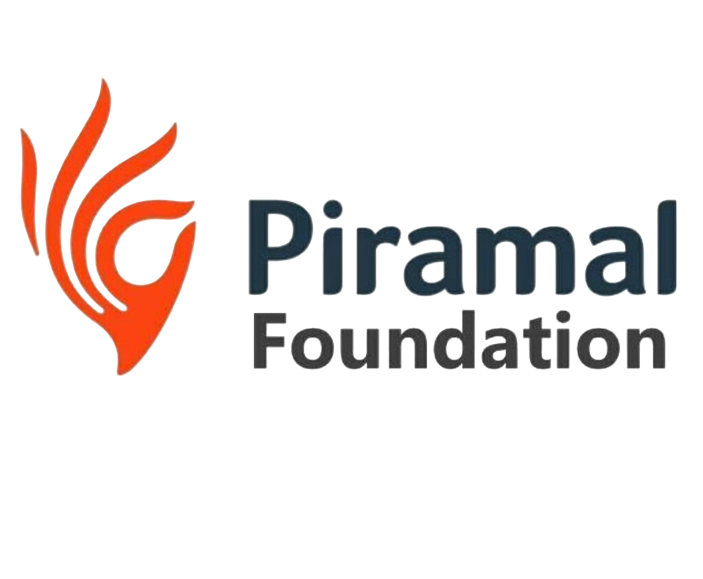

Pre Matric Scholarship Chatbot (e-Kalyan)

Namaste! Main e-Kalyan Pre-Matric Scholarship se related sawalon mein madad karta hoon.
Aap INO login, Student transfer, class edit, IFSC, verification se jude sawal pooch sakte hain.
Send